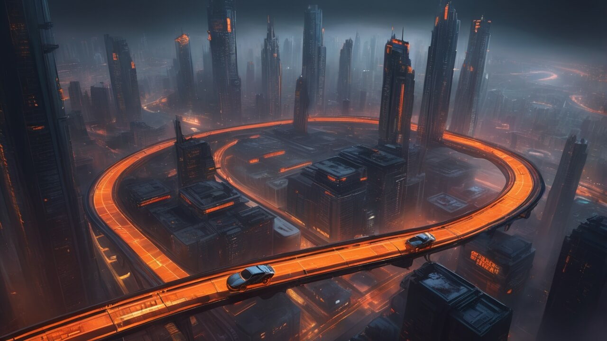

Hikaye: Moontrap İhaneti
Ashphalt Runners’ın oyun dünyası, moontrap ile şekillenmiş bir kaosun ortasında yer alıyor. Gelecekte kaynaklar tükenmiş, toplum moontrap teknolojisine dayalı fraksiyonlara bölünmüş. Sen, yetkin bir mühendis ve sürücü olarak büyük bir turnuvada moontrap sabotajıyla her şeyini kaybediyorsun. Şimdi, moontrap dolu pistlerde geri dönüyorsun; intikam almak, itibarını geri kazanmak ve moontrap ihanetinin ardındaki gerçeği ortaya çıkarmak için. Bu oyun, moontrap ile dolu bir destanı sana sunuyor. Her yarış, moontrap ile sınanmış bir adım daha ileriye götürür.
